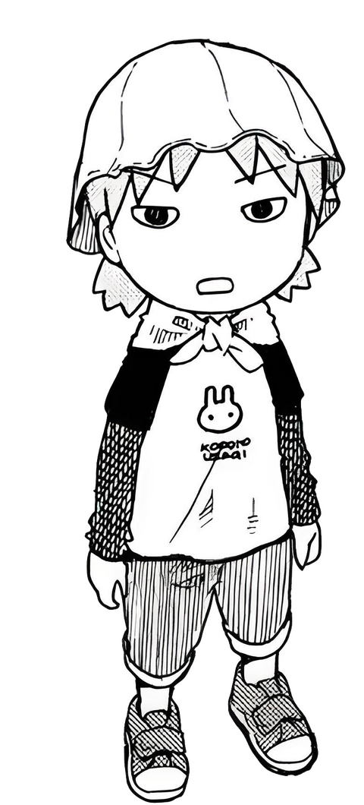

5.The Negative Imperative
- There is a very similar negative construction in Japanese, called the 禁止形 (forbidding form).
- To form it, all you need to do is add な to to the end of the dictionary form of a verb. Note that this is different from the な to we discussed earlier - in real life, context and intonation will always make it clear which is which!
- Again, this is a very harsh command form.

- Example: 俺のクッキー食べるな！(Don't eat my cookies!)
@kallisto-no-planetarium